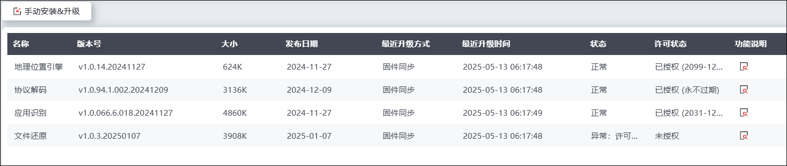
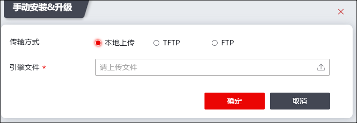

引擎管理是对引擎模块安装、升级、信息查看的操作集合，仅支持Web界面使用。
主要有两个使用场景：
1）系统中已有的引擎模块，单独进行版本升级，无需升级整个系统。
2）新增的引擎模块，首次安装到系统环境中，无需重装或升级整个系统。
手动安装&升级：手动安装或升级引擎到系统环境中，文件传输支持：本地上传、TFTP下载、FTP下载三种方式，管理员可以根据使用场景选择其中的一种方式。其中TFTP、FTP下载，需要用户自行搭建服务器，配置好TFTP/FTP服务器及其工作目录，并确认引擎文件存放在工作目录中，确认TFTP/FTP服务器和系统环境之间网络正常。
具体操作步骤如下：
| 步骤1 | 选择 |

| 步骤2 | 升级引擎模块 |
1）点击“手动安装&升级”，弹出“手动安装&升级”窗口，如下图所示。

在配置手动升级时，各项参数的具体说明如下表所示。
参数 |
说明 |
|
|---|---|---|
升级方式 |
设置手动安装&升级的服务器类型。可选项：本地上传、TFTP和FTP。 Ø本地：从管理主机中获取引擎文件。 ØTFTP：从指定的URL地址下载引擎文件。 ØFTP：从指定的FTP服务器地址下载引擎文件。 |
|
本地上传 |
点击“”，选择管理主机上保存的引擎文件。 |
|
TFTP |
服务器地址 |
设置存放规则库的TFTP服务器地址。 |
引擎文件 |
输入引擎文件名称。 |
|
FTP |
服务器地址 |
设置存放规则库的FTP服务器地址。 |
用户名 |
FTP服务器不支持匿名登录时为必选项。输入FTP服务器的合法登录账号名称。 |
|
密码 |
FTP服务器不支持匿名登录时为必选项。输入FTP服务器的合法登录账号名称对应的密码。 |
|
端口号 |
设置服务器发送规则库的端口号。 |
|
引擎文件 |
输入存放引擎文件名称。 |
|
2）配置完成后，点击【确定】按钮，完成引擎文件升级。